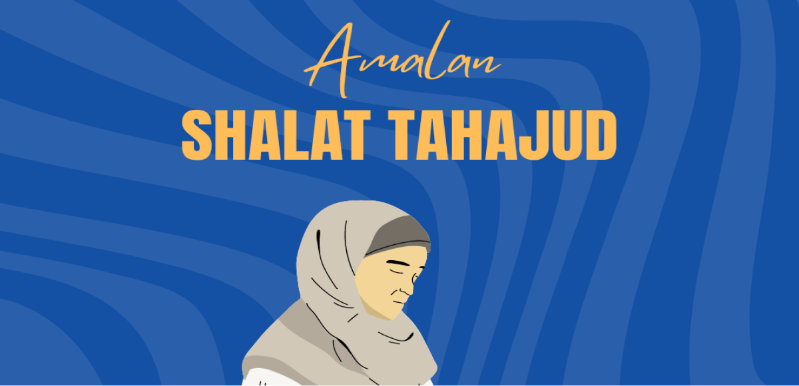

Amalan Shalat Tahajud
oleh adminpamputripwt / 18 Juni 2024
Amalan Shalat tahajud adalah salah satu ibadah sunnah yang sangat dianjurkan dalam Islam Dilakukan pada sepertiga malam terakhir, shalat tahajud memiliki keutamaan khusus yang tidak dimiliki oleh shalat sunnah lainnya.
Ibadah ini tidak hanya mendekatkan diri kepada Allah SWT, tetapi juga memberikan banyak manfaat spiritual dan fisik bagi yang melaksanakannya. Dalam artikel ini, kita akan membahas tentang keutamaan shalat tahajud, tata cara pelaksanaannya, dan manfaat yang dapat diperoleh.
Shalat tahajud adalah momen terbaik untuk mendekatkan diri kepada Allah SWT. Dalam keheningan malam, hati dan pikiran lebih tenang sehingga lebih khusyuk dalam beribadah.
Bangun di sepertiga malam dan melakukan aktivitas fisik seperti shalat dapat meningkatkan kesehatan fisik dan mental. Berbagai penelitian menunjukkan bahwa orang yang rutin bangun malam memiliki kualitas tidur yang lebih baik dan lebih produktif di siang hari.
Shalat tahajud adalah salah satu cara untuk mendapatkan ampunan Allah SWT dan menghapus dosa-dosa yang telah lalu. Rasulullah SAW bersabda: “Shalat malam itu lebih utama dari shalat siang, karena ketika itu lebih ikhlas dan lebih jauh dari riya.” (HR. Muslim).
Orang yang rutin melaksanakan shalat tahajud akan mendapatkan cahaya di hari kiamat yang akan menerangi jalannya menuju surga. Rasulullah SAW bersabda: “Siapa yang menjaga shalat tahajud dengan sungguh-sungguh, maka wajahnya akan terlihat bercahaya di siang hari.” (HR. Ibnu Majah).